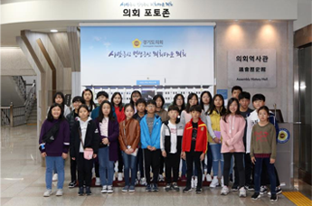

자바스크립트를 지원하지 않는 브라우저에서는 일부 기능을 사용하실 수 없습니다.
https://www.enable-javascript.com/ko
브라우저에서 자바스크립트를 활성화하는 방법을 참고 하세요.
본문 바로가기
주메뉴 바로가기
경기도의회
회의록
의안정보
어린이
지역상담소
e-브리핑
화면축소
100%
화면확대
경기도 의회 인스타그램
경기도 의회 블로그
경기도 의회 페이스북
경기도 의회 유튜브
경기도 의회 카카오톡
경기도 의회 트위터
메뉴 열기
Menu close
민주주의와 지방자치제도
의회소개
의회에서 하는일
재미있는 어린이의회
견학하고 싶어요!
유용한 사이트
블로그
페이스북
유튜브
카카오톡
트위터
경기도
어린이의회
에 오신 것을 환영합니다.
의회에서 하는 일
의회 진행방식
의회 용어사전
재미있는 어린이의회
경기도 어린이의회 견학앨범
광성드림학교 학생 및 학부모 경기도의회 방문 견학
광성드림학교
광성드림학교 학생 및 학부모

광성드림학교 학생 및 학부모 경기도의회 방문 견학
광성드림학교 학생 및 학부모 경기도의회 방문 견학
이전
정지
다음
경기도 의회 견학앨범 더보기